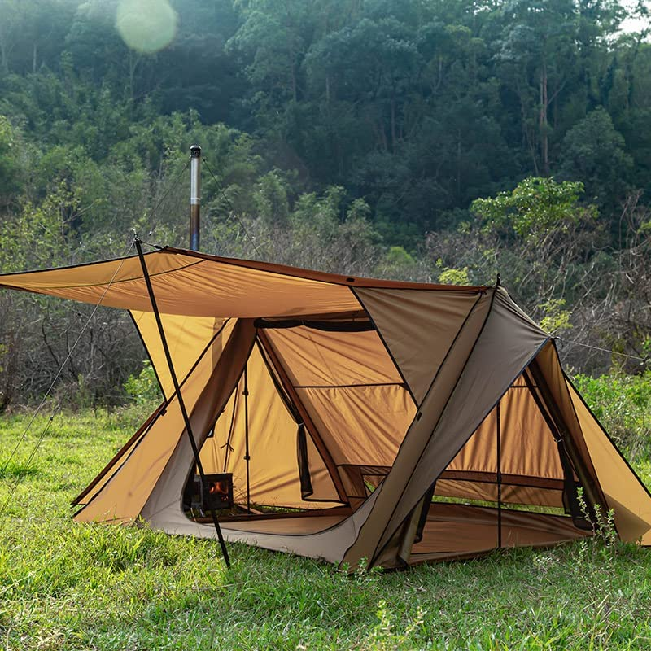
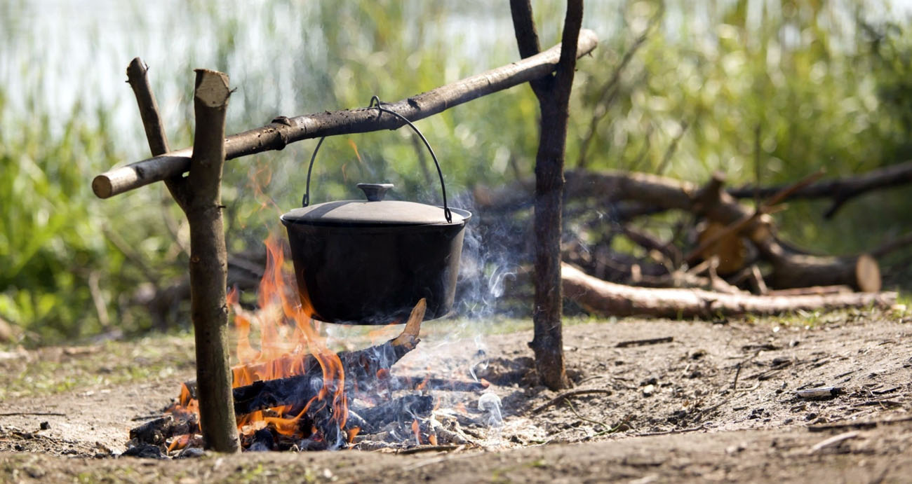

The Most Essential for Your Next Camping Trip
Camping Tent
A tent is
the most important piece of equipment a backpacker needs. Without it, where
will you sleep? It also serves to protect you from the elements and from creepy
crawlies. Your tent must be durable enough to withstand bad weather, able to
hold up against strong winds and heavy rains. Make sure there are no weak spots
in the seams or poles, or places where water can get through.
You should
also ensure your tent is sufficiently ventilated. In the summer, campers often
choose a mesh or mesh and fly combo tent that are easy to set up, but when the
weather takes a turn for the worse, you'll be glad you took our advice. You
might want to choose a double-wall tent instead of a single-wall or inflatable
model. Double wall tents have rigid walls lined with waterproof material that
allow air to flow between them and keep rain out while keeping condensation out
of your living space.

Campfire
Cooking Kit

Planning
on cooking your own food? You'll need a fire before you can actually do so.
Depending on where you are camping, and how long you plan to stay, you may or
may not be able to bring a stove. If you aren't allowed fires or open flames at
your campsite, or if it's impractical in bad weather, cook over your campfire
with a cooking kit.
Cooking
supplies for your fire need to include matches, a lighter, cooking utensils
like pots, pans and cutting boards, and whatever else you might need to cook
over the flame - starting with firewood. Choosing a camping stove is far more
complicated than just choosing a gasoline model.
To know more https://outdoorawaits.com/camping-gear/best-campfire-cooking-kits/
Sleeping
Bag & Pad
A quality
sleeping bag and pad are essential for a good night's sleep. You'll also need a
pillow to complete your sleeping ensemble. You can purchase a sleeping bag, or
choose one that's already packed for you so you don't have to worry about
packing it up just in case.
Your
sleeping bag needs to be large enough that you can get comfortable in it, yet
small enough to pack easily. Remember, if you're doing a backpacking trip with
a partner, the bag should be big enough to accommodate two people. Make sure
the bag is insulated and has plenty of pockets to store your gear.
Your
sleeping pad needs to be thick enough to protect your back while keeping you
pain free, yet light and portable enough that you can carry it in a daypack.
Water and
Food
You're
going to need water. You're also going to need food. You should pack plenty of
both so you don't have to worry about running out, no matter how long your trip
may be. Again, think about your route and the terrain you'll be traveling over
- will water or food be available along the way? If not, calculate how much
you'll need for each day and make sure you bring plenty with you.
Cloths
You're
going to need to do a little laundry on the trail. You don't want to be wearing
the same clothes twice, so you'll need a fresh set of clothes for each day of
your trip. You can wash them at special facilities in town, or use hanging clothes
lines that provide more privacy while also helping you stay dry and clean.
You're
also going to want to change out some of your clothing. If it's too hot or too
cold, a good layer on top can keep you comfortable and protected from the
elements.
Shoes
You need a
good pair of shoes to keep your feet comfortable, protect them from the
elements and keep your foot health in check. Hiking boots are the best choice
for backpackers, though you'll want to look into waterproofing solutions if
you're planning on hiking through wet weather. If your shoes don't offer enough
support for your ankles and arches, consider a pair of hiking insoles.
First Aid
Kit
Your first
aid kit needs to be complete and up-to-date. You'll also need to practice using
it. Everyone who goes backpacking should be well versed in their treatment
options before they head out.
Headlamp
If you
plan on doing any night hikes or camping, you'll need a flashlight of some
kind, and odds are it's not going to be a hand-held model. This is where a
headlamp comes in handy. It allows you to use both of your hands while keeping
your hands free and your light source readily available.
Camping
Axe
Your camp
axe is your primary survival tool. You can use it to unpack your gear, set up
your campsite, build a shelter or firewood stack and chop down anything that
might be in your way. It weighs less than a pound, but can do wonders to keep
you comfortable while you're roughing it outdoors.
If you
plan on camping off the beaten path or overnight, you'll need a 12"
hatchet. You can also use it to split logs while you're out on a backpack trip
- something you'll definitely want to do if you're camping next to a river or
stream. Find the right axe for you - make sure it's not too heavy and that it
is well balanced.
Water
Filter & Purifier
A water
filter and a purifier can help make your drinking water safe to drink without
any harmful microbes or microorganisms. It allows the water to flow through its
membrane so that impurities cannot get through.
Solar Rechargeable
Charger
You're
going to want your electronics to stay charged, and a solar charger will make
sure that you can use all of them. Not only will it charge all of your devices,
it'll also allow you to charge your camera batteries or recharge your GPS
device's batteries. Of course, if you have a solar charging station at home,
you can use that instead.
GPS and
Compass
A GPS
device will help you navigate your way around the trail while a compass will
help you find your way back. It's important to know how to use these just in
case you find yourself stranded in the wilderness - especially if it's dark and
you don't know exactly where you are.